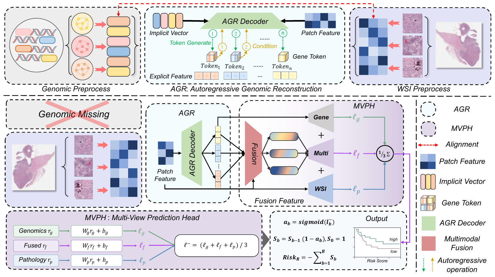

ARMS: Autoregressive Genomic Reconstruction and Multi-View Prediction Head for Multimodal Cancer Survival Analysis
Anonymous Submission
Abstract
Cancer survival prediction supports patient risk stratification and personalized treatment planning. Although reconstructing Gene-transcriptomic (Genomic) representations from histopathological images offers a way to address unavailable genomic data, some existing methods lack explicit contextual conditioning during genomic reconstruction and rely on a single fused representation for prediction. To address these limitations, we propose ARMS, an Autoregressive Reconstruction and Multi-view Survival Network integrating Autoregressive genomic Reconstruction (AGR) and a Multi-View Prediction Head (MVPH). AGR reconstructs genomic representations sequentially, using the preceding functional group’s representation as an additional decoding condition alongside latent variables and histopathological information. This introduces explicit inter-group context while preserving group specificity. MVPH produces survival logits from genomics-guided histopathological, genomic, and fused representations and aggregates them with equal weights before the sigmoid transformation. By providing pre-fusion branches with direct prediction paths, MVPH jointly exploits branch-specific and fused information while reducing reliance on a single fusion mapping. Our ARMS achieves five-fold mean C-indices of 0.678, 0.696, 0.847, 0.701, and 0.719 on the TCGA BLCA, BRCA, GBMLGG, LUAD, and UCEC cohorts, respectively, demonstrating its potential for multimodal cancer survival prediction.
Method Overview

Autoregressive Genomic Reconstruction (AGR). Group-specific reconstruction combines latent variables and histopathological conditions with explicit context from the preceding functional group.
Multi-View Prediction Head (MVPH). Three prediction heads use the pathology, genomic, and fused representations. Their survival logits are averaged with equal weights before the sigmoid transformation.
Experimental Results
Five-fold cross-validation on five TCGA cancer cohorts. C-index (mean ± standard deviation); higher is better.
| Method | Modality | BLCAn = 373 | BRCAn = 957 | GBMLGGn = 570 | LUADn = 452 | UCECn = 480 | Overall |
|---|---|---|---|---|---|---|---|
| MLP | G | 0.613 ± 0.019 | 0.587 ± 0.033 | 0.809 ± 0.029 | 0.617 ± 0.026 | 0.657 ± 0.036 | 0.657 |
| SNN | G | 0.619 ± 0.023 | 0.596 ± 0.027 | 0.805 ± 0.030 | 0.625 ± 0.019 | 0.651 ± 0.018 | 0.659 |
| SNNTrans | G | 0.627 ± 0.019 | 0.618 ± 0.018 | 0.816 ± 0.037 | 0.631 ± 0.023 | 0.641 ± 0.026 | 0.667 |
| ABMIL | P | 0.622 ± 0.051 | 0.614 ± 0.037 | 0.786 ± 0.028 | 0.596 ± 0.067 | 0.649 ± 0.028 | 0.652 |
| CLAM-SB | P | 0.613 ± 0.058 | 0.607 ± 0.016 | 0.792 ± 0.032 | 0.590 ± 0.076 | 0.650 ± 0.066 | 0.650 |
| CLAM-MB | P | 0.621 ± 0.065 | 0.617 ± 0.012 | 0.799 ± 0.028 | 0.596 ± 0.075 | 0.657 ± 0.028 | 0.658 |
| TransMIL | P | 0.625 ± 0.050 | 0.614 ± 0.037 | 0.803 ± 0.037 | 0.593 ± 0.063 | 0.665 ± 0.019 | 0.660 |
| Porpoise | P + G | 0.661 ± 0.034 | 0.644 ± 0.010 | 0.829 ± 0.033 | 0.646 ± 0.025 | 0.660 ± 0.106 | 0.694 |
| MCAT | P + G | 0.660 ± 0.046 | 0.652 ± 0.019 | 0.833 ± 0.029 | 0.642 ± 0.054 | 0.686 ± 0.042 | 0.695 |
| MOTCat | P + G | 0.667 ± 0.038 | 0.659 ± 0.034 | 0.835 ± 0.037 | 0.656 ± 0.021 | 0.683 ± 0.060 | 0.700 |
| CMTA | P + G | 0.671 ± 0.039 | 0.648 ± 0.048 | 0.846 ± 0.041 | 0.666 ± 0.025 | 0.699 ± 0.035 | 0.706 |
| SurvPath | P + G | 0.663 ± 0.026 | 0.661 ± 0.024 | 0.839 ± 0.039 | 0.671 ± 0.036 | 0.709 ± 0.039 | 0.709 |
| PIBD | P + G | 0.634 ± 0.029 | 0.636 ± 0.028 | 0.817 ± 0.038 | 0.628 ± 0.063 | 0.687 ± 0.072 | 0.680 |
| LD-CVAE | P + G | 0.665 ± 0.023 | 0.662 ± 0.038 | 0.838 ± 0.035 | 0.668 ± 0.054 | 0.666 ± 0.069 | 0.707 |
| MDCS-MoAME | P + G | 0.674 ± 0.020 | 0.673 ± 0.026 | 0.841 ± 0.028 | 0.663 ± 0.024 | 0.700 ± 0.055 | 0.710 |
| ARMS (Ours) | P + G | 0.678 ± 0.042 | 0.696 ± 0.047 | 0.847 ± 0.025 | 0.701 ± 0.029 | 0.719 ± 0.027 | 0.728 |
P: histopathology; G: genomics. Values, including the Overall column, are reproduced as reported in Table I of the manuscript.
Ablation Study
Effect of AGR and MVPH across the five cohorts.
| Model variant | BLCA | BRCA | GBMLGG | LUAD | UCEC |
|---|---|---|---|---|---|
| Baseline | 0.665 ± 0.023 | 0.662 ± 0.038 | 0.838 ± 0.035 | 0.668 ± 0.054 | 0.666 ± 0.027 |
| w/o AGR | 0.651 ± 0.021 | 0.681 ± 0.045 | 0.847 ± 0.034 | 0.676 ± 0.028 | 0.688 ± 0.036 |
| w/o MVPH | 0.669 ± 0.033 | 0.679 ± 0.026 | 0.844 ± 0.030 | 0.681 ± 0.024 | 0.720 ± 0.029 |
| ARMS (Ours) | 0.678 ± 0.042 | 0.696 ± 0.047 | 0.847 ± 0.025 | 0.701 ± 0.029 | 0.719 ± 0.027 |
C-index (mean ± standard deviation). Bold indicates the highest mean in each column, including ties. All values follow Table II of the manuscript.